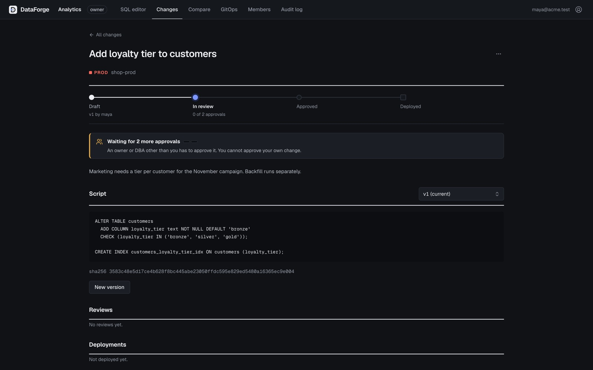

Yang di-deploy
persis yang di-approve.
Developer menulis script dan membuat change request untuk koneksi prod. Owner atau DBA lain me-review; tidak ada yang bisa menyetujui perubahannya sendiri. Dua approval untuk prod, terikat ke hash sha256 versi itu; versi baru membatalkan approval lama. Saat deploy, DBA mengetik nama koneksi untuk konfirmasi dan worker menjalankan byte yang sama persis.
Tonton 45 detiknya